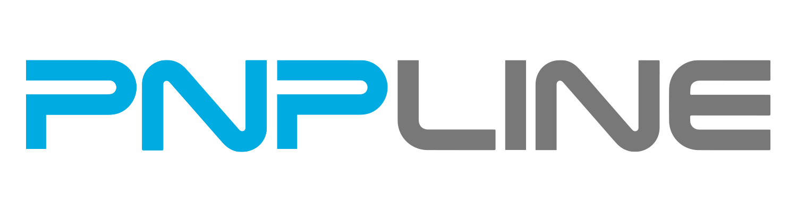

PNPLINE 창고 · v008
네이비 구조체 · 브랜드 청록색과 회색 · 4단 랙 · 순환 컨베이어

동작 전후 비교
f744–1248 · 505프레임 · 12fps · 42.08초. 아래 버튼은 두 영상을 같은 프레임으로 이동합니다.
비교 영상 불러오는 중…



네이비 구조체 · 브랜드 청록색과 회색 · 4단 랙 · 순환 컨베이어
f744–1248 · 505프레임 · 12fps · 42.08초. 아래 버튼은 두 영상을 같은 프레임으로 이동합니다.
비교 영상 불러오는 중…